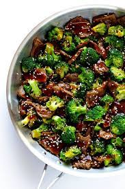

Beef and Broccoli

Beef and Broccoli
This classic Chinese beef and broccoli recipe is quick and easy to make homemade, and tastes even better than the restaurant version!
Ingredients
Beef and Broccoli Ingredients
- 1 lb. flank steak, cut into 1/4-inch-thick pieces
- 1 tablspoon soy sauce
- 1 tablespoon rice wine vinegar
- 3-4 cups chopped broccoli florets
- 1 tablespoon peanut oil
- 2 cloves of garlic
- 1 batch of sauce
- optional garnishes: toasted sesame seeds and/or thinly sliced green onions
Sauce
- 3/4 cup water
- 3 tablespoons oyster sauce
- 3 tablespoons soy sauce
- 1 tablespoon cornstarch
- 1 tablespoon rice wine vinegar
- 1 teaspoon sesame oil
- 1/4 teaspoon ground ginger
- 1/4 teaspoon ground black pepper
- optional: 1-3 teaspoons sriracha, to taste
Steps
TO MAKE THE BEEF AND BROCCOLI:
- Add the steak to a large bowl, along with the soy sauce and rice wine vinegar. Stir to combine, then let the steak marinate for at least 10 minutes (or up to 1 hour).
- Meanwhile, fill a large stockpot halfway full of water, and bring it to a boil. Stir the broccoli florets into the water, and cook for 30-45 seconds. Drain (or transfer the broccoli to a strainer), and set aside.
- Prepare the sauce (see instructions below).
- Once the steak has finished marinating, add the peanut oil to a large saute pan or wok over medium-high heat. Add the steak and garlic, and saute — stirring occasionally — until the steak is cooked through, about 5-6 minutes. Add the sauce and broccoli, and toss to combine. Continue cooking for 1-2 more minutes, or until the sauce comes to a simmer and thickens.
- Remove from heat and serve immediately, topped with optional garnishes if desired.
TO MAKE THE SAUCE:
- Whisk all ingredients together until combined.
go back